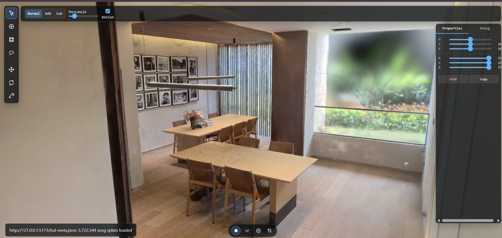

SplatShop
A WebGPU-first renderer for 3D Gaussian splats: photoreal scenes made of millions of soft, transparent blobs, which have to be sorted and blended every frame in a browser.
Features
01EWA splat rendering
Full 3D covariance projected to a screen-space ellipse per splat, drawn as batched instanced quads.
02GPU radix sort
Depth keys and histogram → prefix → scatter on the GPU; a CPU worker sort as fallback.
03SSOG LOD streaming
A hierarchical spatial LOD format with on-demand chunk loading under a splat budget.
04GPU visibility
Chunk frustum culling and Hi-Z occlusion in compute, with a compacted visible list.
05Memory system
GPU page pool, buffer arenas, readback and typed-array pools, dirty-range uploads.
06Formats
.ply .splat .spz .ksplat .sog .ssog, with packed data decoded in the shader.
07Quality adaptation
5 presets, device tiers, DPR cap, temporal jitter accumulation, reverse-Z depth.
08Debug tooling
Tile heatmaps, chunk colours, sort stats, and de-duplicated WebGPU error capture.
09Editing tools
GPU nearest-splat and colour selection passes exist; select, move and paint tools are designed in the UI.
The frame pipeline: CPU decides, worker selects, GPU does the heavy work
What I chose, and what I didn't
| Decision | Rejected | Why |
|---|---|---|
| Sort an index buffer | Reorder every attribute array | ~23 MB instead of ~298 MB per sort; the splat data never moves |
| GPU radix sort | CPU sort + upload | No readback, no upload; parallel and comparison-free |
| Packed data, decoded in the shader | Expanded float attributes | ~20 B vs 52 B per splat; bandwidth is the real limit for splats |
| Budget-driven LOD | Fixed distance thresholds | Predictable frame cost on any device and any scene size |
| LOD in Rust → WASM, in a worker | TypeScript on the main thread | Tight loop, no GC pauses; the main thread stays free; zero-copy results |
| Coarse fallback while streaming | Show nothing until loaded | Never a hole on screen; fine detail replaces coarse when ready |
| WebGPU first, WebGL 2 fallback | WebGPU only | Compute where available, still runs everywhere |
SSOG: a spatial tree whose nodes point at byte ranges
Depth keys + radix sort, entirely on the GPU
What loads first, and what gets evicted
Batched instancing: 128 splats per instance
52 bytes → ~20 bytes per splat, decoded in the shader
The WebGL context kept dying
My first renderer (a Three.js prototype) lost the WebGL context when I moved the camera over a 320 MB, 5,722,544-splat scene on a 6 GB GPU.
- Cause: every frame a CPU sort physically reordered all five attribute arrays and marked them for re-upload, about 298 MB per sort.
- Fix 1: sort an index list instead: ~23 MB, ~13× less.
- Fix 2: move the sort to the GPU, so nothing is uploaded per sort.
- Fix 3: keep the data packed and decode it in the shader.
- Fix 4: stream under a budget, which is the real protection.
That bug is why SplatShop is designed the way it is.
70+ techniques; these matter most
Index sort, then GPU sort
~298 → ~23 MB per sort, then zero uploads; skipped when the camera is still.
Budget-aware hierarchical LOD
Foveated, with hysteresis; Rust → WASM in a worker with transferable results.
Frustum + Hi-Z culling
A compacted visible-chunk list on the GPU; occlusion protected against popping.
GPU page pool
First-fit pages, pressure-based eviction, per-frame upload budget, stale-drop.
Packed data
52 → ~20 B per splat, decoded in the shader; codebooks for scale and colour.
Arenas and pools
Buffer and uniform arenas, typed-array pools, dirty-range uploads, bind-group caching.
Compute tile pipeline
32×32 px tiles, depth bands, work queue; many small sorts instead of one big one.
Quality adaptation
5 presets, device tiers, DPR cap, reverse-Z, Halton temporal accumulation.
The full catalogue, 70+ techniques by pipeline stage, is in docs/optimization-techniques.md, plus a 14-part article series.